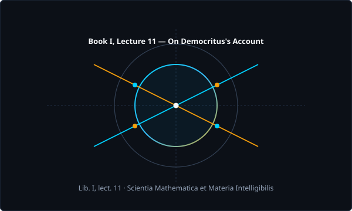

On the Heavens Book II, Lecture 2 — On Positional Directions in Natural Bodies and How They Are Considered by Position in Mathematical Figures¶
In II De Caelo, Lectio 2 — De differentiis positionis in corporibus naturalibus et quomodo considerantur in corporibus mathematicis

[lib. 2 l. 2 n. 1] After the Philosopher has made determinations concerning the perpetuity of the heaven, here he treats of the diversity of its parts. And first, he treats of the diversity of the parts of the heaven taken according to diversity of position within the same heaven; second, of the diversity of parts taken according to the order of the celestial bodies to one another, at Since, however, there is no contrary motion, etc. Concerning the first he does two things: first, he treats of the diversity of positional parts of the heaven according to the opinion of others; second, according to his own opinion, at For us, however, since it has been determined, etc. Concerning the first he does two things: first, he proposes what he intends; second, he makes plain what is proposed, at Now it has indeed been determined, therefore, etc. He says first, therefore, that because certain thinkers—namely the Pythagoreans, who posited right and left in all things—say that a certain part of the heaven is right and a certain part left, it seems we must consider whether the matter stands in the way they state, or whether these are rather to be attributed to the heaven otherwise than they state, if indeed one ought to apply these principles, namely right and left, to the body of the whole world inasmuch as they belong to the celestial body that contains the whole world. And this seems worthy of consideration because right from the outset it occurs to anyone that, if right and left exist in the heaven, much more and with greater priority must the prior principles—namely above and below, before and behind—be judged to exist in the heaven.
[lib. 2 l. 2 n. 2] Then when he says, Now it has indeed been determined, therefore, etc., he makes plain what is proposed. And first, he shows the condition of these principles according as they are found in other things; second, he shows that they are not found in all bodies, at Wherefore neither in every body, etc. Concerning the first he does two things: first, he shows that not all the aforesaid principles belong to all things; second, he shows in what order they stand to one another, at Now above is indeed, etc. Concerning the first he again does two things: first, he shows that principles of this sort do not all belong to all things, whereas some and not all belong to certain things; second, he shows that it is altogether incongruous to attribute some and not all of them to the heaven, at Yet if one must apply them to the heaven, etc. He says first, therefore, that determinations concerning principles of this sort, which are called differences of position, were made in the book On the Progression of Animals, on account of the fact that they are proper to the nature of those things, namely animate beings. For in animals such differences are manifestly seen to exist according to determinate parts: in such a way indeed that to certain animals—namely perfect ones, which not only sense but are also moved with local motion—all such parts belong, namely right and left, before and behind, above and below; whereas to certain animals, namely imperfect and immobile ones, some of them belong, namely above and below, before and behind; and to plants none belong save above and below.
[lib. 2 l. 2 n. 3] Then when he says, Yet if one must apply them to the heaven, etc., he shows that if any of these be posited in the heaven, it is necessary to posit all things of this sort in it. And he says that if anything of this kind must be attributed to the heaven, namely either right or left, it is reasonable that what is found in perfect animals should exist there preeminently—or it is reasonable that what is first in animals should exist in it, because when the posterior is posited, the prior is posited. Now since there are three oppositions or dimensions, each of these three—namely above, before, and right—is like a certain principle of its own opposition or dimension. And consequently he expounds what those three are that he spoke of: one of them is the opposition or dimension between above and below, in which above is the principle; another is between before and its opposite, which is called behind, wherein what is before is the principle; and the third is between right and left, in which right is the principle. And because the perfect is that which consists of all its parts or principles, it is reasonable that all oppositions or dimensions of this sort be found in perfect bodies, that is, in perfect animals. Hence, since the heaven is preeminently perfect, it is reasonable that if it is capable of these parts, it should possess all of them, and not merely some.
[lib. 2 l. 2 n. 4] Then when he says, Now above is indeed, etc., he shows the order of the aforesaid principles in two ways. First, indeed, on the side of the dimensions themselves. For above is the principle of length: for in man, who is the preeminently perfect animal, length—as his greatest dimension—is reckoned from the head, which is his above, down to the feet, which are his below. Right, however, is the principle of breadth: for the breadth of a man is reckoned according to the distance between right and left. Before, moreover, is the principle of depth: for the depth or thickness of a man is reckoned according to the distance between before and behind. And in other animals the relation holds proportionally. Now length is prior to breadth, and breadth to depth, just as line is prior to surface, and surface to body. Therefore above is prior to right, and right is prior to before.
[lib. 2 l. 2 n. 5] Second, at Moreover, in another way, etc., he proves the same thing on the side of motions. And this is because the things that have been spoken of are certain principles from which motions first begin in animals possessing parts or principles of this sort. For the motion of growth begins from above. And this appears manifestly in human beings: for the head, which is the above of a human being, is also above according to the position of the world; and from the head the motion of growth begins, because through the opening of the mouth, which is in the head, nourishment—the matter of growth—is drawn in. In plants, however, the above is the root, which is proportioned to the head in animals in taking in nourishment; yet what is the above of a plant stands in an opposite position to the above of the world. In other animals, meanwhile, it stands in an intermediate manner. Motion according to place, on the other hand, begins from the right: for naturally animals move the right part before the left, just as in walking they move the right foot first. Yet in the motion of alteration of the senses themselves, the principle is what is before: for that part of the animal in which the senses exist is called the front. Because, therefore, the motion of growth is prior to sensitive motion, which in turn is prior to local motion in animals, it follows that above is prior to before, and before is prior to right.
[lib. 2 l. 2 n. 6] Then when he says, Wherefore neither in every body, etc., he shows that principles of this sort do not exist in all bodies. And first, he concludes from the premises that speaking properly and per se principles of this sort do not exist in inanimate bodies; second, he shows in what manner they are spoken of as existing there, at Yet in these indeed, etc. He says first, therefore, that because the aforesaid differences are principles of certain motions, it follows that above and below, right and left, before and behind are not to be sought in all bodies, save only in animate bodies, whichever possess within themselves a principle of motion; whereas in none of the inanimate bodies do we see any principle whence motion begins. Now this can be understood in two ways. In one way, because in animate bodies there is an active principle of motion, which is the soul; whereas in inanimate bodies there is no active principle of motion—namely one that moves—rather, they are moved by an exterior mover, which is either what generates them or what removes an obstacle, while inwardly they possess a passive principle of motion whereby they are naturally suited to be moved, such as heaviness or lightness, as is clear in Physics VIII. In another way it can be understood because in animate bodies a determinate part of the body is found from which motion begins, as has been said, whereas in inanimate bodies this is not found. For, as he adds, among inanimate bodies some are not moved at all, such as those that rest in their proper places (or rather he says this on account of artificial bodies, which possess no motion of themselves); whereas others are moved, such as natural bodies existing outside their own proper place, yet each of them is moved toward its own place uniformly on every side: just as fire is moved solely upward and earth is moved solely toward the center of the world, with no other difference of position taken into account either on the part of the body moved—so that one part of it should begin to be moved earlier than another—or with respect to place, so that a natural body should be moved toward its own place from one local position and not from another.
[lib. 2 l. 2 n. 7] Then when he says, Yet in these indeed, etc., he shows how the aforesaid positions are sometimes spoken of in inanimate bodies. And he says that in bodies of this sort we speak of above and below, and right and left, and similarly before and behind, solely by comparison to ourselves. And this happens in three ways: in one way, according as we call right that which stands opposite us on our right side, just as diviners, for instance augurs, call a bird on the right that which lies to our right, and on the left that which lies to our left; in a second way, by likeness to our own parts, just as in a statue we call right what resembles the right side of a human being, and left what resembles the left; in a third way, by contrary position, calling left what stands opposite our right, and right what stands opposite our left, as is clear in an image reflected in a mirror. And the same account holds in the other positions. Yet in inanimate things themselves considered according to themselves, no diversity of such parts is found. And this is clear because, if they are turned around relative to us, they will stand in the contrary way from before: for what was right will be called left, and conversely; and it is similar in the other positions. In animate things, on the other hand, however they may be turned, parts of this sort always stand in the same way.
[lib. 2 l. 2 n. 8] Then when he says, Wherefore one might also wonder at the Pythagoreans, etc., he shows that the Pythagoreans wrongly attributed differences of this sort to the heaven: and this in three ways, which can be gathered from what precedes, and therefore he introduces them here by way of conclusion. Now the first way is that, since there are six positions, it seems astonishing why they attributed only two of these to the heaven—namely right and left—and left aside the other four, even though it is reasonable that all of them should belong to the heaven, as was said above.
[lib. 2 l. 2 n. 9] The second way he sets forth at No less, etc.: because, namely, if some had to be passed over so as not to be attributed to the heaven, those ought to have been passed over which are less principal. Now that the four they passed over are not less principal than the two they posited, he shows by four arguments. The first of these he sets forth at For in no way a lesser, etc. For we do not see in any animals whatever that the part which is above has a lesser difference from that which is below, or that which is before from that which is behind, than the right has from the left—nay rather, a greater one. For the right and left parts differ solely in power, while agreeing in figure (for the right hand is stronger than the left, even though it is of the same figure; and similarly the right shoulder is stronger than the left for initiating motion, although the left is stronger for bearing a burden; and similarly the right foot is stronger for motion, whereas the left foot is stronger for firm support); yet it is manifest that the front and back parts of an animal, and its upper and lower parts, differ not only in power, but also in figure; and things that differ more seem to possess a more principal distinction.
[lib. 2 l. 2 n. 10] The second argument he sets forth at And above and below, etc., which is as follows. Above and below are found in all animate bodies, both animals and plants; whereas right and left do not exist in plants, save only in perfect animals; and thus above and below are prior, according as that is called prior from which the consequence of being is not convertible.
[lib. 2 l. 2 n. 11] The third argument he sets forth at Moreover, as length, etc., which is as follows. Length is prior to breadth, and this in the way of generation, because according to geometers a line moved makes a surface; now above is the principle of length, while right is the principle of breadth, as was shown above. Since, therefore, the principle of what is prior is itself prior, it follows that above is prior to right, namely according as something is prior in generation (inasmuch as something is called prior in many ways, as is clear in the Categories and in Metaphysics V).
[lib. 2 l. 2 n. 12] The fourth argument he sets forth at Moreover, if above indeed, etc. And he says that above is that whence motion proceeds, which can be understood of the motion of growth; right, however, is that from which local motion starts; while before is that toward which the animal advances, as lying opposite its sense organs; and thus it is clear that above possesses a certain primacy with respect to the other species of position, just as the motion of growth is more essential and more intrinsic to an animal than local motion. Yet everything stated here can better be referred to local motion, so as to say that in an animal moved according to place, above is the principle whence motion originates—because, namely, in the head, which is above, sense flourishes, and sense is what moves in animals, as is stated in De Anima III; right, on the other hand, is that from which local motion starts, because the right part is moved first, as has been said; whereas before is that toward which the animal is moved. Now the moving principle holds the highest primacy in the motion of an animal; and according to this it is clear that above holds primacy among the other species of position. Thus, therefore, from these four arguments the Philosopher concludes the second way of refuting the statement of the Pythagoreans, concluding that it is just to rebuke them because they neglected the more principal principles by not attributing them to the heaven.
[lib. 2 l. 2 n. 13] The third way he sets forth at And because they thought these, etc., saying that they are also to be rebuked because they posited that right and left exist alike in all things, whereas they exist only in perfect animals, as was said above. Yet one must know that it belonged to the intention of the Pythagoreans to reduce all things to good and evil as to two principles. And because they believed every number to be comprehended under the decad, they posited ten principles on the side of the good and ten opposites on the side of evil, as is clear in Metaphysics I. Moreover, through each of the items they placed in that table of opposites, they understood all things belonging to its genus. Hence through right and left they understood all the other positions, understanding that just as right is referred to the good, so too are above and before, whereas left and behind and below are referred to evil. And they posited right and left rather than the other positions because right is more manifestly accustomed to be referred to the good and left to evil—for we are accustomed to call good fortune right (dextra) and ill fortune left (sinistra)—and therefore they attributed right and left to all things to which they attributed good and evil. Or else they named only right and left, comprehending the others under these, because they saw that in whatever things right and left are found, the others are also found, though not conversely. Perhaps, too, they attributed right and left specially to the heaven rather than the others because in the heaven there is local motion, to which right and left pertain, whereas there is neither growth, to which above and below pertain, nor alteration of sense, to which before and behind pertain; or because above and below, and before and behind, are diversified according to figure, whereas right and left are not: for the parts of the heaven, being circular, are not diversified according to figure.